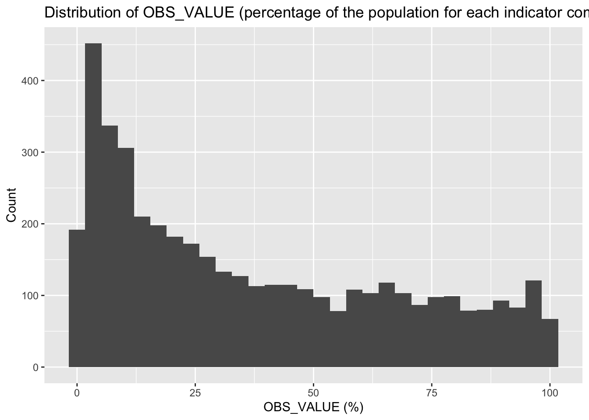
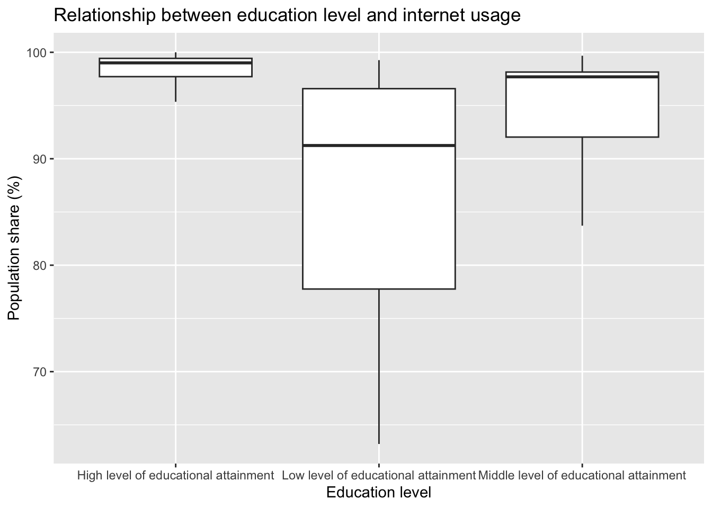

Rows: 4,330
Columns: 42
$ STRUCTURE <chr> "DATAFLOW", "DATAFLOW", "DATAFLOW", "DATAFL…
$ STRUCTURE_ID <chr> "OECD.STI.DEP:DSD_ICT_HH_IND@DF_IND(1.1)", …
$ STRUCTURE_NAME <chr> "ICT Access and Usage by Individuals", "ICT…
$ ACTION <chr> "I", "I", "I", "I", "I", "I", "I", "I", "I"…
$ REF_AREA <chr> "DEU", "DEU", "DEU", "DEU", "DEU", "DEU", "…
$ `Reference area` <chr> "Germany", "Germany", "Germany", "Germany",…
$ FREQ <chr> "A", "A", "A", "A", "A", "A", "A", "A", "A"…
$ `Frequency of observation` <chr> "Annual", "Annual", "Annual", "Annual", "An…
$ MEASURE <chr> "D1U_I", "D1B_I", "C5B1_I", "G1_I", "D1T_I"…
$ Measure <chr> "Individuals using the internet for selling…
$ UNIT_MEASURE <chr> "PT_POP", "PT_POP", "PT_POP", "PT_POP", "PT…
$ `Unit of measure` <chr> "Percentage of population", "Percentage of …
$ GEO_AREA <chr> "_Z", "_Z", "_Z", "_Z", "_Z", "_Z", "_Z", "…
$ `Geographical area` <chr> "Not applicable", "Not applicable", "Not ap…
$ AGE <chr> "Y16T24", "Y16T24", "Y16T24", "Y16T24", "Y1…
$ Age <chr> "From 16 to 24 years", "From 16 to 24 years…
$ SEX <chr> "_T", "_T", "_T", "_T", "_T", "_T", "_T", "…
$ Sex <chr> "Total", "Total", "Total", "Total", "Total"…
$ EDUCATION_LEVEL <chr> "HI", "HI", "HI", "HI", "HI", "HI", "HI", "…
$ `Education level` <chr> "High level of educational attainment", "Hi…
$ INCOME_GROUP <chr> "_T", "_T", "_T", "_T", "_T", "_T", "_T", "…
$ `Income group` <chr> "Total", "Total", "Total", "Total", "Total"…
$ EMP_STATUS <chr> "_T", "_T", "_T", "_T", "_T", "_T", "_T", "…
$ `Employment status` <chr> "Total", "Total", "Total", "Total", "Total"…
$ TIME_PERIOD <dbl> 2022, 2022, 2022, 2022, 2022, 2022, 2022, 2…
$ `Time period` <lgl> NA, NA, NA, NA, NA, NA, NA, NA, NA, NA, NA,…
$ OBS_VALUE <dbl> 21.8518, 79.2020, 98.6700, 99.2543, 84.4278…
$ `Observation value` <lgl> NA, NA, NA, NA, NA, NA, NA, NA, NA, NA, NA,…
$ OBS_STATUS <chr> "A", "A", "A", "A", "A", "A", "A", "A", "A"…
$ `Observation status` <chr> "Normal value", "Normal value", "Normal val…
$ OBS_STATUS_2 <chr> NA, NA, NA, NA, NA, NA, NA, NA, NA, NA, NA,…
$ `Observation status 2` <chr> NA, NA, NA, NA, NA, NA, NA, NA, NA, NA, NA,…
$ OBS_STATUS_3 <lgl> NA, NA, NA, NA, NA, NA, NA, NA, NA, NA, NA,…
$ `Observation status 3` <lgl> NA, NA, NA, NA, NA, NA, NA, NA, NA, NA, NA,…
$ UNIT_MULT <dbl> 0, 0, 0, 0, 0, 0, 0, 0, 0, 0, 0, 0, 0, 0, 0…
$ `Unit multiplier` <chr> "Units", "Units", "Units", "Units", "Units"…
$ TIME_HORIZON_USE <lgl> NA, NA, NA, NA, NA, NA, NA, NA, NA, NA, NA,…
$ `Time horizon` <lgl> NA, NA, NA, NA, NA, NA, NA, NA, NA, NA, NA,…
$ DECIMALS <dbl> 2, 2, 2, 2, 2, 2, 2, 2, 2, 2, 2, 2, 2, 2, 2…
$ Decimals <chr> "Two", "Two", "Two", "Two", "Two", "Two", "…
$ BREAKDOWN_V7_HH <chr> "Y16_24HI", "Y16_24HI", "Y16_24HI", "Y16_24…
$ `V7 Breakdowns households` <chr> "Individuals aged 16-24 with a high level o…Project Proposal
Dataset
Licence: OECD Terms & Conditions (Data – Section 3) “…you can extract from, download, copy, adapt, print, distribute, share and embed Data for any purpose, even for commercial use. You must give appropriate credit to the OECD…”
Description: The dataset contains information on ICT (information and communication technologies) usage among individuals across multiple indicators, such as age, sex, education level, income group, and purpose of ICT use.
It is important to note that a pre-filtered version of the dataset will be used in the following analysis to reduce storage size (the full dataset is over 500MB) and to focus on the indicators required for the research questions. The applied filters will be documented in the data cleaning script located in data/processed and can be reproduced using the official OECD Data Explorer (link above).
For this proposal, the following filters will be applied:
Time period: 2021–2025
Reference areas: Germany, United States, France
Unit of measure: Percentage of population
Age groups: 16–24, 25–54, 55–74
Education level: Low, medium, and high educational attainment
This pre-filtered dataset contains 42 columns and 4,330 rows. Each row represents a unique combination of multiple indicators, such as age and education level, and an observed value representing a part of the population.
Research Questions
Does education level influence the proportion of the population across different countries and age groups that use the internet daily or almost every day within the last quarter of the year? (From 2021-2025)
Needed columns: AGE, EDUCATION_LEVEL, TIME_PERIOD, OBS_VALUE, Measure, REF_AREA
This question is explanatory but not causal. A possible correlation could be driven by other factors, such as income differences across education levels resulting in differing access to some technologies.
Context and target audience
The results of the analysis could be of interest to businesses, as they may help to understand which categories of audiences are reachable through the internet and how these groups interact with the internet.
A clean website presenting the results using professional language and visualizations would be appropriate.
Initial data analysis
Code
data_raw %>%
dplyr::select(AGE, EDUCATION_LEVEL, TIME_PERIOD, OBS_VALUE, Measure, REF_AREA) %>%
summary() AGE EDUCATION_LEVEL TIME_PERIOD OBS_VALUE
Length:4330 Length:4330 Min. :2021 Min. : 0.000
Class :character Class :character 1st Qu.:2021 1st Qu.: 9.669
Mode :character Mode :character Median :2023 Median : 28.495
Mean :2023 Mean : 36.909
3rd Qu.:2024 3rd Qu.: 62.133
Max. :2025 Max. :100.000
Measure REF_AREA
Length:4330 Length:4330
Class :character Class :character
Mode :character Mode :character
Plot 1 — Distribution of the outcome variable:
Code
data_raw %>%
ggplot(aes(x = OBS_VALUE)) +
geom_histogram(bins = 30) +
labs(
title = "Distribution of OBS_VALUE (percentage of the population for each indicator combination)",
x = "OBS_VALUE (%)",
y = "Count"
)
Plot 2 — Relationship or trend relevant to a research question:
Code
data_raw %>%
filter(MEASURE == "C5A_I") %>%
ggplot(aes(x = `Education level`, y = OBS_VALUE)) +
geom_boxplot() +
labs(
title = "Relationship between education level and internet usage",
x = "Education level",
y = "Population share (%)",
)
Data quality issues:
We may need multiple differently pre-filtered versions of the original dataset, as some indicators rule each other out during filtering. This may be due to missing observations for certain combinations of indicators. For example, education level and employment status rule each other out.
As a result, questions such as “How does education level influence employment status…” are not answerable with this dataset due to the absence of observations containing both indicators.
There are also many useless columns. Some contain the same information in different formats, while others are entirely filled with NA values.
The documentation is lackluster. The only documented indicator is MEASURE/ Measure. The remaining indicators are fortunately mostly self-explanatory or not needed for the analysis, but it is still important to note the lack of documentation.
Analysis Plan
Which variables will you use?
- Question 1: AGE, EDUCATION_LEVEL, TIME_PERIOD, OBS_VALUE, Measure, REF_AREA
What analytical approach or method seems appropriate, and why?
- Question 1: First of all, we would use a boxplot to get a first insight into the relationship between education level and daily or almost daily internet usage. Using faceted plots, we are able to compare these results across different countries and age groups. Then, a linear model could be used to further examine the impact of age, education level, and country.
What cleaning or transformation steps do you anticipate needing?
Categorical variables need to be declared as such during import. Columns that contain the same information in different formats can be removed. Columns that are not needed for the analysis can be dropped.
What are the main uncertainties or risks (e.g. not enough data, confounding variables, missing values)?
The biggest risk is the absence of certain indicator combinations. The research questions will need to be planned around this limitation. This dataset will not be able to answer every possible question based on the available indicators.
Workflow organisation
Code style: We will follow the coding style taught in StatProg1 and StatProg2, including the use of the tidyverse style with piping (%>%), the here package for file paths, and other conventions. We will enforce this using a code_style.md file, which documents used packages and coding style conventions.
Packages: tidyverse, janitor, here, …
Git workflow: There will always be at least two branches to avoid conflicts within the group. This, together with a clear separation of tasks, should help to prevent merge conflicts. We will also work on separate .qmd files, which will later be combined into a final document using the include command for additional modularity.
.gitignore:.Rhistory .RData .Rproj.user/
/.quarto/ _site/
.DS_Store Thumbs.db
**/*.quarto_ipynb
…